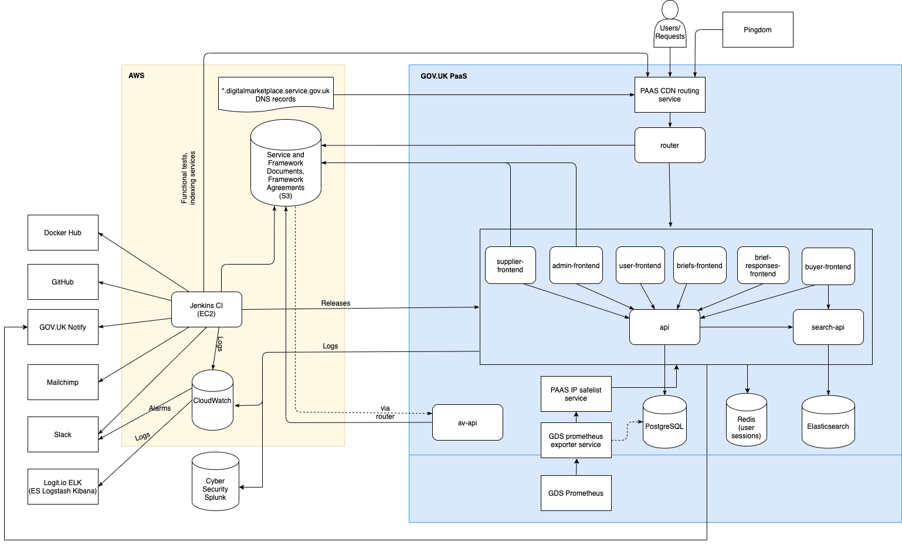

Application architecture¶
Contents
Overall architecture¶
There are nine main Flask applications that run together to provide the Digital Marketplace service. These are backed by a PostgreSQL database as the main data store, and an Elasticsearch index of currently available services on the G-Cloud framework and opportunities (briefs) on the DOS framework.
(The architecture diagram source can be opened using draw.io in Google Drive if it needs to be edited.)
Frontend applications, the router app and both APIs are run on GOV.UK PaaS. All incoming requests are received
through an instance of the PaaS cdn-route service and passed to the router. The router then routes them to the
right host within the PaaS, for example any request matching search-api.* goes to the Search API.
Our frontend apps are all on the same www.* subdomain. We configure PaaS to route requests to the correct app
based on the path prefixes, e.g. /suppliers/opportunities routes to the brief-responses app (see the full list
of routes). An application can have multiple path prefixes routed to it (for example, in the buyer-frontend).
Note
Although requests are routed through a CDN service we do not have caching activated as we ‘forward all headers’. Instead we use the service to have a custom domain and auto-renewed TLS certificates.
Applications¶
Data API¶
https://github.com/alphagov/digitalmarketplace-api
The data API is the gatekeeper to the main database: making calls to the API is the only way the frontend apps can fetch or store data. It contains JSON schemas for each JSON data field in the database and uses these to validate any data sent to be stored - if the sent data does not match the schema then a validation error (400 Bad Request) is raised and the invalid data will not be stored.
If updates are made to services that are indexed in Elasticsearch then the data API knows to send a corresponding update to our index via the Search API.
Search API¶
https://github.com/alphagov/digitalmarketplace-search-api
The search API is a wrapper layer in front of Elasticsearch. It is used by the buyer frontend to fetch search results for queries about G-Cloud services.
Search data is indexed overnight via the ES indexes Jenkins jobs. These jobs do not create new indices, but simply overwrite the index currently pointed to by each framework alias.
New indices are only created and aliased if the entire data set needs to be reindexed, e.g. following a database reset or a change in the mapping. This is done with two scripts for each framework:
index-to-search-services.py- Creating a new index with a date suffix e.g. ‘g-cloud-9-2018-01-01’
update-index-alias.py- Pointing the alias at the new index and deleting the old index
See the Scripts repo README for usage and examples of these scripts.
See the Search API README for more details on Elasticsearch mappings and indexing.
Antivirus API¶
https://github.com/alphagov/digitalmarketplace-antivirus-api
The Antivirus API is responsible for ensuring the files stored in our S3 buckets are free of viruses. It is usually activated by SNS notifications resulting from S3 upload events, but can also scan data on demand if necessary. As a “high risk” app, it holds very few credentials, minimizing the impact from a compromised instance.
For more information on the Antivirus API, see The Antivirus API.
User Frontend¶
https://github.com/alphagov/digitalmarketplace-user-frontend
All URLs served by this app begin /user.
This app includes routes for:
Login and forgotten password pages for buyers, suppliers and admins (the frontend apps share a secret so the same login cookie works for all apps).
The second part of buyer and supplier user creation (from when user clicks the activation link) using an encrypted token generated by the briefs or supplier frontend apps.
Buyer Frontend¶
https://github.com/alphagov/digitalmarketplace-buyer-frontend
This app includes routes for:
Homepage and all main
www.routes that do not require a loginDirect award procurements i.e. G-Cloud
It also currently includes routes for the public list of published Digital Outcomes and Specialists opportunities.
Briefs Frontend¶
https://github.com/alphagov/digitalmarketplace-briefs-frontend
All URLs served by this app begin /buyers.
This app includes routes for buyers writing requirements for procurements with Digital Outcomes and Specialists.
It also currently includes routes for creation of buyer accounts (up until sending the activation link) and the buyer dashboard.
Brief Responses Frontend¶
https://github.com/alphagov/digitalmarketplace-brief-responses-frontend
All URLs served by this app begin /suppliers/opportunities.
This app includes routes used by suppliers responding to briefs (opportunities), i.e. tendering for work in Digital Outcomes and Specialists. More specifically, we have:
The suppliers opportunities dashboard
Asking clarification questions about briefs
Creating and editing brief responses
Supplier Frontend¶
https://github.com/alphagov/digitalmarketplace-supplier-frontend
All URLs served by this app begin /suppliers.
This app includes routes for:
Creation of supplier accounts (up until sending the activation link)
Applying to get on to a framework
Managing services on the marketplace
Returning framework agreement documents
Admin frontend¶
https://github.com/alphagov/digitalmarketplace-admin-frontend
All URLs served by this app begin /admin.
This app includes routes for:
All pages behind an admin login, such as:
Viewing framework application statistics during a procurement
Support team editing services and managing supplier/buyer user accounts
CCS Sourcing team users managing framework contracts (countersigning framework agreements)
CCS Sourcing team users viewing and updating suppliers’ framework agreement declarations
Note, we have six different admin roles: admin, admin-ccs-sourcing, admin-ccs-category,
admin-ccs-data-controller, admin-framework-manager and admin-manager which have different permissions
for admin actions they are allowed to perform.
Router app¶
https://github.com/alphagov/digitalmarketplace-router
Our router app is an NGINX application that routes incoming requests to the correct host in PaaS. The routing within PaaS to specific frontend apps is configured by the PaaS manifest, during deployment.
The router app also:
provides a Basic Auth header for incoming traffic to access the frontend apps
restricts traffic to preview and staging environments to GDS IP addresses
restricts traffic to the admin interface to GDS and CCS IP addresses
provides Rate Limiting for the platform
Note
For more details on the router app, see the router README.
Asynchronous processes¶
Occasionally we have the need to make apps perform actions outside the scope of a request, or at least outside the scope of the current request. This can be for performance reasons (not wanting to make the requester wait around while something is being done in the background) or because a delayed action is required. So far we have strongly resisted the temptation to have an “async task queue”, because such a thing is something of a pain to manage. In its place we have “made do” with a number of solutions:
Periodic jobs running from jenkins. If the task creation results in the system making a persistent record of its existence (in the database or as a file on S3 for example), a nightly, hourly (or possibly even more frequent) jenkins job could run to find & execute outstanding tasks. An example of this is the
generate-framework-agreement-counterpart-signature-pages.pyscript which runs nightly , generating a countersignature page for each supplier that had its framework agreement approved during the previous day and sending a notification to the supplier. It’s usually best to make such scripts simply look for any outstanding tasks rather than use a time window to look for tasks created since the last run - it’s hard for a script to know reliably when the last successful run was. It’s also helpful to make the effect of the script as atomic/transactional as possible to reduce the possibility of a failing task getting stuck in an in-between state, or have a task get marked as complete prematurely, only for a later phase to fail. However, frequently the design of our API makes this difficult.In the Antivirus API we cheat by using AWS’s SNS retry mechanism as a makeshift queue. A “task” (notification) that is unable to be “processed” (delivered) at a particular time, possibly due to load, will have its delivery retried for up to an hour after creation. Any notifications still unable to be processed at the end of this period will generate an alert and a “catchup job” runs nightly to find any outstanding jobs and process them, thus reliability is achieved.
The API client has some limited support for an operation mode we call “async-not-async”. It’s named as such because it gives the appearance of being a way to send “asynchronous” requests to an API endpoint, allowing control to return to the calling process, while actually being a total cheat underneath. It simply sets the request’s read timeout to an extremely low value, causing the request to give up waiting for a response shortly after the request headers have been successfully sent. This works because web frameworks & servers don’t generally have the ability to propagate “connection closed” information up the stack, therefore allowing the request processing to continue to completion on the server long after the connection has been aborted.
While fine for many needs (mostly those involving the triggering of side effects), this is insufficient as soon as the calling process cares about the response, because it will never get it - it’s not real async, after all. Then again, if a calling process really cares about the response from a request and wants to wait around for that response, a developer should be asking themselves what they’re actually expecting to be asynchronous about their job.
- Caveats of using this mechanism include:
a very limited ability for the caller to determine if the request was successful
nginx occasionally spitting out a 499 Client Closed error & log when it realizes the connection has been torn down before it can respond
as with most async call mechanisms, the ability for the client to inadvertently flood the receiver with thousands of requests in a very short amount of time with very little penalty to itself
An example of where we use this mechanism is the Data API endpoint that propagates a service update to the Search API. These calls can be optionally made to omit the wait for this propagation to complete. Again, for reliability this use relies on a periodic job that updates the full index every night to provide reliability and ensure that its action actually takes place.